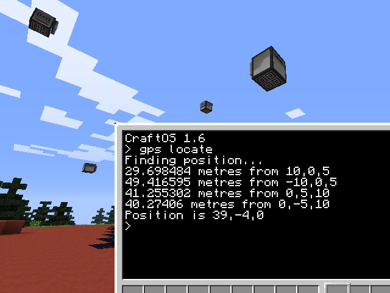
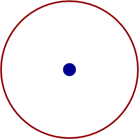
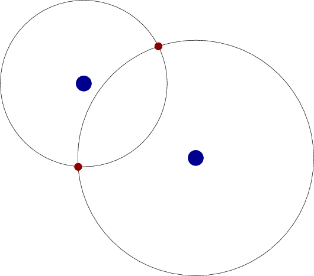
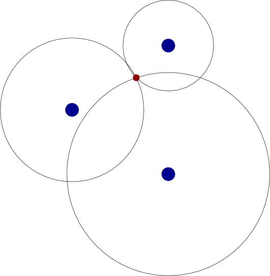
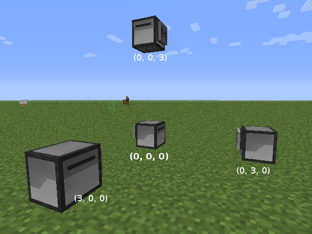

GPS har blitt en viktig del av hverdagen, og vi tenker sjelden over magien i at en liten dings alltid vet hvor vi er! I denne oppgaven skal vi se litt på hvordan GPS fungerer, og sette opp et GPS-lignende system inne i Minecraft.

Steg 1: Hvordan virker GPS?
Du vet kanskje at GPS virker ved at GPS-mottakeren vår (ofte en telefon) kommuniserer med satelitter? Men hvordan skjer denne kommunikasjonen, og hvordan finner mottakeren vår ut hvor den er?
Litt forenklet sagt snakker mottakeren vår med flere satelitter (ofte 6 - 8 om gangen), og den får vite hvor hver satelitt er og hvor langt unna satelitten er fra mottakeren. La oss se hvordan dette gir posisjonen til mottakeren.
Vi begynner med et enklere eksempel hvor vi antar at verden er flat, 2-dimensjonal, og at det er bare en satelitt. Hvis vi vet posisjonen til satelitten og vår avstand til den vet vi ikke nok til å vite nøyaktig hvor vi er. Men vi vet at vi må være et eller annet sted på en sirkel rundt satelitten, som på figuren.

Hvis vi derimot finner avstanden vår til to forskjellige satelitter vet vi mer om posisjonen vår. I de fleste tilfeller vil vi nå bare ha to alternativer til hvor vi befinner oss.

For å avgjøre hvilket av de to punktene som er vår rette posisjon, trenger vi informasjon fra en tredje satelitt, som i figuren under.

Dersom vi får informasjon fra enda flere satelitter bør den bare bekrefte posisjonen vi allerede har funnet. Husk likevel på at i virkelige målinger er det alltid små feil, slik at man ikke nødvendigvis finner en perfekt posisjon. Da vil flere satelitter bidra til å bedre nøyaktigheten i posisjonen.
Sjekkliste
Vi har sett at i 2 dimensjoner trenger vi minst 3 satelitter for å finne posisjonen vår. Hvor mange satelitter tror du vi trenger i 3 dimensjoner? Nå vil det være 3-dimensjonale kuler som krysser hverandre i stedet for 2-dimensjonale sirkler.
Hva ville skjedd om de tre satelittene over lå på en linje? Ville vi da funnet en unik posisjon?
Steg 2: GPS i Minecraft
Computercraft støtter et system for å lokalisere robotene dine, som bruker de samme prinsippene som GPS. Ved hjelp av trådløst nett kan roboter finne avstanden til andre roboter.
Sjekkliste
Lag en Wireless Turtle.
Start roboten, og skriv
> gps locate
Roboten vil først si at den finner posisjonen, men etter kort tid vil den gi opp, og si at den ikke kunne bestemme sin posisjon.
Programmet gps er innebygd på alle datamaskiner og roboter med trådløst nett.
For at slike roboter skal kunne finne sin egen posisjon, må vi først sette opp satelittroboter med en kjent posisjon. Denne posisjonen kan vi bestemme selv, og det vil igjen bestemme koordinatsystemet disse robotene lever i. For eksempel, kan vi bestemme at denne roboten vi har satt ut skal være sentrum eller origo i koordinatsystemet vårt. Skriv
> gps host 0 0 0
Denne roboten vil nå stå og sende ut sin posisjon til alle andre roboter som lytter.
Lag en ny Wireless turtle noen ruter bortenfor den forrige. Start den, og skriv igjen
> gps locate
Roboten skal nå rapportere hvor langt den er fra den første roboten, men den klarer likevel ikke å bestemme sin egen posisjon.
Vi kan nå bestemme denne nye roboten står et steg i x-retning i forhold til den første roboten. Skriv
> gps host 1 0 0
Lag en tredje Wireless turtle, og kjør gps locate. Hva skjer nå?
Pass på at denne tredje roboten ikke står på linje med de to første robotene. La deretter denne roboten definere y-retningen.
> gps host 0 1 0
Legg merke til at vi med dette bestemmer hva som skal være x og y. Vi trenger ikke forholde oss til klossestørrelser eller rette vinkler om vi ikke vil.
Sett nå ut en fjerde Wireless turtle. Hva skjer nå om du kjører gps locate? Roboten finner posisjonen sin!
Siden vi har satt ut de tre første robotene med z-koordinat lik 0 har vi laget oss et 2-dimensjonalt system. Prøv for eksempel å flytt den siste roboten du satte ut litt oppover, og sjekk posisjonen igjen. Enten vil ikke posisjonen ha endret seg, eller så er roboten litt usikker på posisjonen sin.
For å finne posisjonen i tre dimensjoner trenger vi også en fjerde satelittrobot. Denne må være i en forskjellig høyde fra de tre første robotene.
Posisjoner denne siste roboten et passende sted og skriv
> gps host 0 0 1
Vi har nå et velfungerende posisjonssystem i tre dimensjoner. Prøv å sette ut flere roboter og la dem sjekke posisjonen sin.
Steg 3: Et enkelt koordinatsystem
Selv om vi kan bestemme koordinatsystemet selv, og tilsynelatende helt tilfeldig, er det som regel enklere om koordinatsystemet er regulært og for eksempel er basert på klossestørrelsene i Minecraft.
Sjekkliste
Ødelegg de robotene du har satt ut, og sett ut 4 nye Wireless turtle for eksempel som dette:

Legg deretter inn de korresponderende koordinatene på hver robot med gps host-kommandoene.
Lag en ny Wireless turtle og flytt den rundt mens du undersøker posisjonen dens. Skjønner du hvordan posisjonen endrer seg?
Om du har
Du kan også bruke GPS i dine egne programmer. Da bruker du gps.locate()-funksjonen. Du kan få mer informasjon om denne ved å skrive help gpsapi.
Hei der!
Ser ut som dette er ditt første besøk, vil du ha en omvisning?